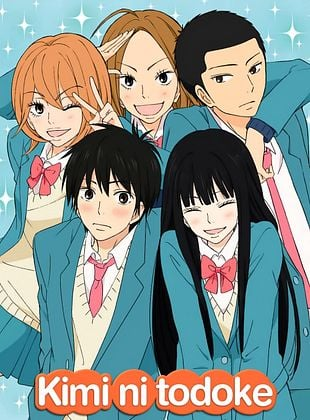
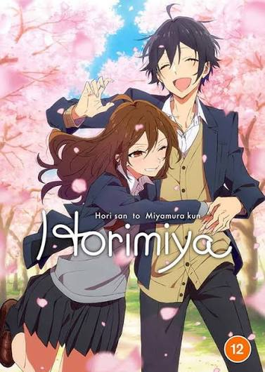
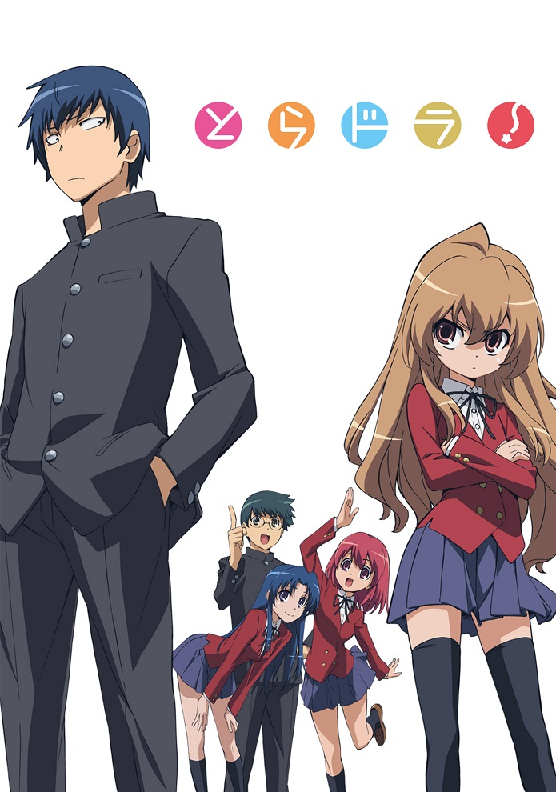

Dublado⭐ 8.3

Kimi ni Todoke
Ano: 2009 | Temp: 3
Episódios: 38
Dublado⭐ 8.2

Horimiya
Ano: 2021 | Temp: 2
Episódios: 26
Dublado⭐ 8.1

Toradora!
Ano: 2008 | Temp: 1
Episódios: 25
Dublado⭐ 8.3
My Dress-Up Darling
Ano: 2022 | Temp: 1
Episódios: 12
Dublado⭐ 8.6
Your Lie in April
Ano: 2014 | Temp: 1
Episódios: 22
Dublado⭐ 7.6
Ao Haru Ride
Ano: 2014 | Temp: 1
Episódios: 12
Dublado⭐ 8.9
Fruits Basket
Ano: 2019 | Temp: 3
Episódios: 63
Dublado⭐ 8.9
Clannad
Ano: 2007 | Temp: 2
Episódios: 47
Dublado⭐ 8.4
Oregairu
Ano: 2013 | Temp: 3
Episódios: 38
Dublado⭐ 8.0
Lovely★Complex
Ano: 2007 | Temp: 1
Episódios: 24
Dublado⭐ 7.7
Golden Time
Ano: 2013 | Temp: 1
Episódios: 24
Dublado⭐ 8.2
Bunny Girl Senpai
Ano: 2018 | Temp: 1
Episódios: 13
Dublado⭐ 8.0
Komi Can't Communicate
Ano: 2021 | Temp: 2
Episódios: 24
Dublado⭐ 7